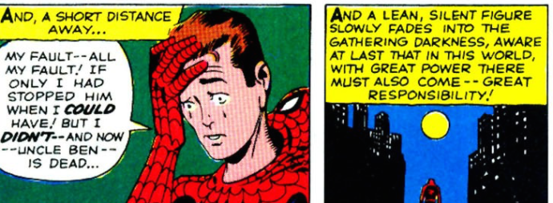

Like many other students who were born in the 21st century, I have always had the option to turn to the internet for guidance. From researching biographies on noteworthy figures for history projects to finding tutorials on the best techniques to perfect a winged eyeliner, the internet has been an ever so valuable source of information. But with the great power of seeking answers, comes the great responsibility of asking the right questions.
An example of a question asked in a helpful manner is this post to Stack Overflow, titled “Starting the week on Monday with isoWeekday().” The post is titled and tagged with relevant information (the Javascript programming language, Moment.js package, and isoWeekday() method) to make it easily identifiable to those who may be familiar with the topic and can provide assistance. The user seeking advice details their goal of creating a calendar that prints out weeks in a tabular format and that they specifically got stuck while trying to implement the isoWeekday method from Moment.js. To show that they put some effort into finding a solution prior to turning to the Stack Overflow community, they even included a link to the documentation that they had previously referred to, which gives viewers a better understanding of what the user knows.
They provided an example of their code that includes comments explaining what they were trying to accomplish along with pointing out results that they didn’t understand, along with a link to a JSFiddle to make it easy for others to experiment with the example code. And when the user received an answer to their question, they included an explanation of their misunderstanding in an edit of the original post.
On the other hand, questions that lack context, objective, and courtesy often warrant minimal interest or unhelpful answers. Take this post as an example of a non-ideal way to seek advice from a question-and-answer website. The title (“how can i write this code with one function”) is easy to understand but extremely broad. The body of the post doesn’t provide any additional information about the issue, aside from the actual example code which lacks comments or explanations.
Though it is clear that they would like for someone to explain how to simplify their six example functions to just one function, they give no reason as to why the change is necessary. Does the current code result in an error? Is there a problem of efficiency? Have they already made an attempt to do this that was unsuccessful? The comment section of the post shares a similar confusion, citing that the lack of context makes it difficult to provide insight.
In the past year that I’ve worked at the UH ITS Help Desk, I have become far more familiar with identifying these smart and not-as-smart questions. When a user fully details the issue they’re experiencing, we are able to troubleshoot and come up with possible solutions way faster than those who we have to pry the information out of. It becomes a lengthy back and forth of trying to understand what we’re dealing with. And when a user calls in about an issue that I haven’t dealt with before, I often have to resort to Google searches and support forums in hopes that someone has asked a “smart question” in the past so that I can refer to the answers they received.
Asking smart questions is an essential skill, especially for software engineers, because of the flexibility of what we work with. There are so many ways to get a single task done, and each programmer will have their own style. It is imperative that we give our questions the best shot of being answered by first making the effort to search for pre-existing answers. And if our search remains futile, providing the full scope of our issue to help others to help us.